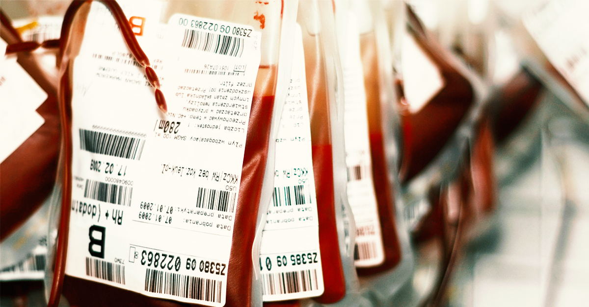

A importância da doação de sangue
A importância da doação de sangue para o sistema de saúde.

Requisitos para doação
Requisitos para que uma pessoa possa ser doadora de sangue e como é simples realizar a doação.
Processo após a doação
O que acontece com o sangue após a doação (separação dos hemocomponentes, etc).

Testes no sangue
Quais são os testes realizados no sangue do doador antes que ele seja fornecido ao receptor.
Vidas salvas
Quantas vidas a doação de sangue pode salvar.